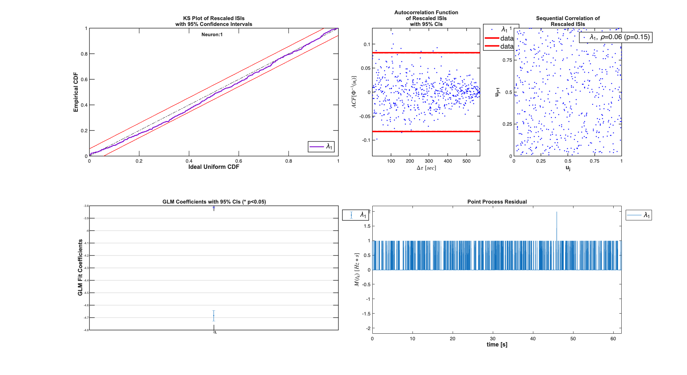
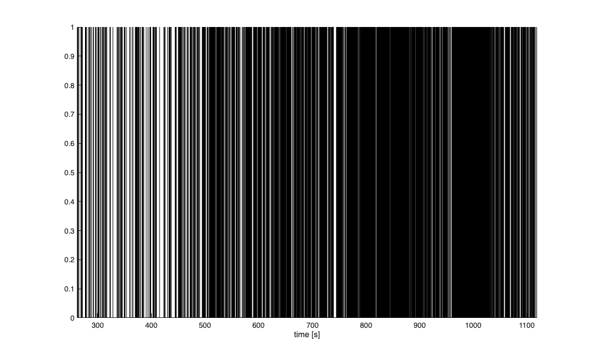
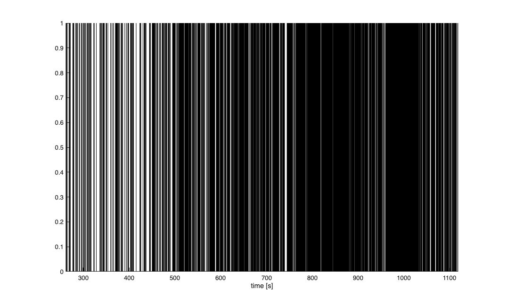
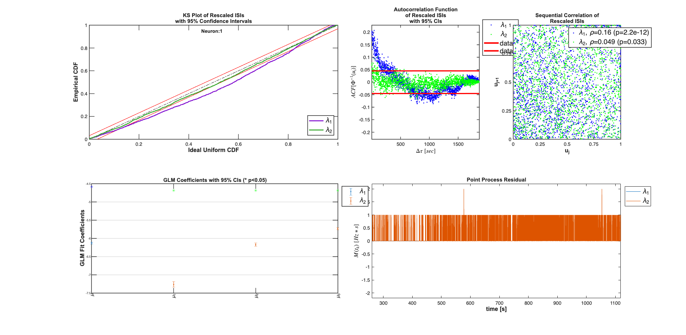
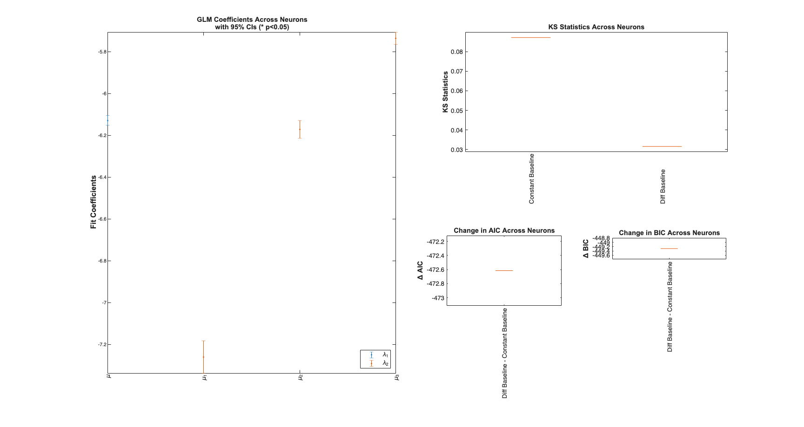

MINIATURE EXCITATORY POST-SYNAPTIC CURRENTS (mEPSCs)
Data from Marnie Phillips marnie.a.phillips@gmail.com This analysis is based on a partial version of the dataset used in
Phillips MA, Lewis LD, Gong J, Constantine-Paton M, Brown EN. 2011 Model-based statistical analysis of miniature synaptic transmission. J Neurophys (under consideration)
Author: Iahn Cajigas
Date: 03/01/2011
Contents
Data Description
epsc2.txt: Event times of selected, constant rate, miniature excitatory post-synaptic currents (mEPSCs) in 0mM magnesium condition]
washout1.txt: Variable rate recording: Event times of selected events, beginning approximately 260 seconds after magnesium is first removed.
washout2.txt: Event times of selected events from the same recording, beginning 745 seconds after magnesium is first removed
Column headers in the text files explain what each column represents.
Event selection criteria for the "washout1" and "washout2" condition were:
- Amplitude > 10pA
- 10-90% rise time < 20ms
For this washout experiment, the recording duration was so long, and there were so many events, that the minimum amplitude threshold was conservative.
The mean RMS noise was only 1.36pA, and a usual threshold would be 5*RMS = 6.8pA.
Constant Magnesium Concentration - Constant rate poisson
Under a constant Magnesium concentration, it is seen that the mEPSCs behave as a homogeneous poisson process (constant arrival rate).
close all; [~,mEPSCDir] = getPaperDataDirs(); epsc2 = importdata(fullfile(mEPSCDir,'epsc2.txt')); sampleRate = 1000; spikeTimes = epsc2.data(:,2)*1/sampleRate; %in seconds nst = nspikeTrain(spikeTimes); time = 0:(1/sampleRate):nst.maxTime; % Define Covariates for the analysis baseline = Covariate(time,ones(length(time),1),'Baseline','time','s','',{'\mu'}); covarColl = CovColl({baseline}); % Create the trial structure spikeColl = nstColl(nst); trial = Trial(spikeColl,covarColl); % Define how we want to analyze the data clear tc tcc; tc{1} = TrialConfig({{'Baseline','\mu'}},sampleRate,[]); tc{1}.setName('Constant Baseline'); tcc = ConfigColl(tc); % Perform Analysis (Commented to since data already saved) results =Analysis.RunAnalysisForAllNeurons(trial,tcc,0); results.plotResults;
Analyzing Configuration #1: Neuron #1

Varying Magnesium Concentration - Piecewise Constant rate poisson
When the magnesium concentration of the bath decreased (i.e. magnesium is removed), the rate of mEPSCs begin to increase in frequency. This can be modeled in a many different ways (using the change in Magnesium directly as a model covariate, etc.) Here we approximate the rate as being constant during certain portions of the experiment. These segments can in principle be estimated (using heirarchical Bayesian methods), but here we select them via visual inspection. We compare three models: a constant rate model (from above), a piecewise constant rate model, and a piecewise constant rate model with history.
% load the data; washout1 = importdata(fullfile(mEPSCDir,'washout1.txt')); washout2 = importdata(fullfile(mEPSCDir,'washout2.txt')); sampleRate = 1000; % Magnesium removed at t=0 spikeTimes1 = 260+washout1.data(:,2)*1/sampleRate; %in seconds spikeTimes2 = sort(washout2.data(:,2))*1/sampleRate + 745;%in seconds nst = nspikeTrain([spikeTimes1; spikeTimes2]); time = 260:(1/sampleRate):nst.maxTime;
Data Visualization
Visual inspection of the spike train is used to pick three regions where the firing rate appears to be different. Here we do not estimate where these transitions happen but pick times in an ad-hoc manner.
figure;
nst.plot;

Define Covariates for the analysis
timeInd1 =find(time<495,1,'last'); %0-495sec first constant rate timeInd2 =find(time<765,1,'last'); %495-765 second constant rate epoch %765 onwards third constant rate %epoch constantRate = ones(length(time),1); rate1 = zeros(length(time),1); rate1(1:timeInd1)=1; rate2 = zeros(length(time),1); rate2((timeInd1+1):timeInd2)=1; rate3 = zeros(length(time),1); rate3((timeInd2+1):end)=1; baseline = Covariate(time,[constantRate,rate1, rate2, rate3],'Baseline','time','s','',{'\mu','\mu_{1}','\mu_{2}','\mu_{3}'}); covarColl = CovColl({baseline}); % Create the trial structure spikeColl = nstColl(nst); trial = Trial(spikeColl,covarColl); %30ms history in logarithmic spacing (chosen after using %Analysis.computeHistLagForAll for various window lengths) maxWindow=.3; numWindows=20; delta=1/sampleRate; windowTimes =unique(round([0 logspace(log10(delta),... log10(maxWindow),numWindows)]*sampleRate)./sampleRate); windowTimes = windowTimes(1:11);
Define how we want to analyze the data
clear tc tcc; tc{1} = TrialConfig({{'Baseline','\mu'}},sampleRate,[]); tc{1}.setName('Constant Baseline'); tc{2} = TrialConfig({{'Baseline','\mu_{1}','\mu_{2}','\mu_{3}'}},sampleRate,[]); tc{2}.setName('Diff Baseline'); % tc{3} = TrialConfig({{'Baseline','\mu_{1}','\mu_{2}','\mu_{3}'}},sampleRate,windowTimes); tc{3}.setName('Diff Baseline+Hist'); tcc = ConfigColl(tc);
Perform Analysis
We see that the piece-wise constant rate model (with and without history, outperform the constant baseline model in terms of AIC, BIC, and KS-statistic. While addition of the history effect yields a model that falls within the 95% confidence interval of the KS plot, it results in increases of the AIC and BIC because of the increased number of parameters.
results =Analysis.RunAnalysisForAllNeurons(trial,tcc,0);
results.plotResults;
Summary = FitResSummary(results);
Summary.plotSummary;
Analyzing Configuration #1: Neuron #1 Analyzing Configuration #2: Neuron #1



Decode Rate using Point Process Filter
% clear lambdaCIF; % delta = .001; % % washout1 = importdata('washout1.txt'); % washout2 = importdata('washout2.txt'); % % sampleRate = 1000; % % Magnesium removed at t=0 % spikeTimes1 = 260+washout1.data(:,2)*1/sampleRate; %in seconds % spikeTimes2 = sort(washout2.data(:,2))*1/sampleRate + 745;%in seconds % nst = nspikeTrain([spikeTimes1; spikeTimes2]); % time = 260:(1/sampleRate):nst.maxTime; % spikeColl = nstColl(nst); % % clear lambdaCIF; % lambdaCIF = CIF([1],{'mu'},{'mu'},'poisson'); % spikeColl.resample(1/delta); % dN=spikeColl.dataToMatrix; % Q=.001; % Px0=.1; A=1; % [x_p, Pe_p, x_u, Pe_u] = CIF.PPDecodeFilter(A, Q, Px0, dN',lambdaCIF); % figure; % tNew = 260:delta:(length(x_p(1:end-1))*delta+260); % plot(tNew,exp(x_p)./delta); % % %% % close all; % N=30000; A=1; B=ones(1,N)./N; % xfilt = filtfilt(B,A,x_p); % figure; % plot(tNew,x_p,'-.b'); % hold on; plot(tNew,xfilt,'k','Linewidth',3); % %% % close all; % figure; % index = find(tNew<280,1,'last'); % subplot(2,1,1); % plot(tNew(index:end),x_p(index:end),'-.b'); hold on; % plot(tNew(index:end),xfilt(index:end),'k','Linewidth',3); % xlabel('time [s]'); % ylabel('\mu'); % axis tight; % v=axis; % axis([v(1) v(2) -9 -5]); % % subplot(2,1,2); % plot(tNew(index:end),exp(x_p(index:end))./delta,'-.b'); hold on; % plot(tNew(index:end),exp(xfilt(index:end))./delta,'k','Linewidth',3); % axis tight; % v=axis; % axis([v(1) v(2) 0 5]); % xlabel('time [s]'); % ylabel('\lambda(t) [Hz]');